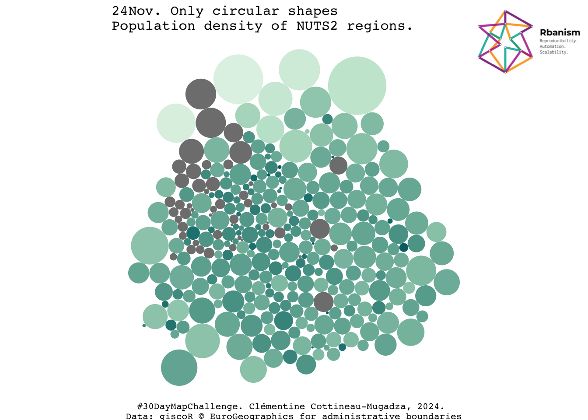

# Define the packages to be used
packages <- c("tidyverse", "sf", "cartogram", "magick", "magrittr", "units",
"eurostat", "readxl","grid", "extrafont", "giscoR")
# Function to check if packages are installed and load them
load_packages <- function(pkgs) {
# Check for missing packages
missing_pkgs <- pkgs[!(pkgs %in% installed.packages()[, "Package"])]
# Install missing packages
if (length(missing_pkgs)) {
install.packages(missing_pkgs)
}
# Load all packages
lapply(pkgs, library, character.only = TRUE)
}
# Load the packages
load_packages(packages)
loadfonts(device = "postscript")#30DMC_24Nov_Circular
24 November. Only circular shapes.
“Map using only circles. Everything should be circular. Forget straight lines and sharp edges, and see how creative you can get by sticking to round shapes.”
1. Package Installation and Loading
2. Import data, backgrounds & Rbanism logo
#Source: https://ropengov.github.io/giscoR/
# nut2
nut2 <- gisco_get_nuts(
year = "2021",
epsg = "4326",
resolution = "10",
nuts_level = "2"
)
# Group by NUTS by country and convert to lines
country_lines <- nut2 |>
group_by(
CNTR_CODE
) |>
summarise(n = n()) |>
st_cast("MULTILINESTRING")
# population density
popdens <- get_eurostat("demo_r_d3dens") |>
filter(TIME_PERIOD == "2021-01-01") |>
mutate(density = values)Dataset query already saved in cache_list.json...Reading cache file /var/folders/ty/2lm3f9cd5ng7cw3js3lgkzdxbr_fhd/T//RtmphTW9XG/eurostat/b36ef96ca321546bf459edc08e5dd32f.rdsTable demo_r_d3dens read from cache file: /var/folders/ty/2lm3f9cd5ng7cw3js3lgkzdxbr_fhd/T//RtmphTW9XG/eurostat/b36ef96ca321546bf459edc08e5dd32f.rdsnut2_sf <- nut2 %>%
left_join(popdens, by = c("NUTS_ID" = "geo"))
nut2_sf$area <- as.numeric(sf::st_area(nut2_sf)) / 1000000
# Download Rbanism logo
rbanism_logo <- image_read('https://rbanism.org/assets/imgs/about/vi_l.jpg')4. Map data
sf_use_s2(FALSE)Spherical geometry (s2) switched offbb <- sf::st_bbox(c(xmin = -25, xmax = 35, ymin = 32, ymax = 71.18), crs = st_crs(nut2_sf))
cropped_eu <- st_crop(nut2_sf,bb) |>
st_transform(crs="EPSG:9827") # Bonne projalthough coordinates are longitude/latitude, st_intersection assumes that they
are planarWarning: attribute variables are assumed to be spatially constant throughout
all geometriesggplot() +
geom_sf(data = cropped_eu, aes(fill = log(density)), lwd = 0) +
coord_sf(datum = st_crs(nut2_sf)) +
scale_fill_gradientn(
colours = hcl.colors(10, "Mint", rev = TRUE),
n.breaks = 10,
guides("")) +
ggtitle(paste0("24Nov. Only circular shapes \nPopulation density of NUTS2 regions.")) +
ylab("")+
xlab(paste0("#30DayMapChallenge. Clémentine Cottineau-Mugadza, 2024. \nData: giscoR © EuroGeographics for administrative boundaries")) +
theme_minimal() +
theme(axis.text=element_text(size=6, family="Courier"),
plot.title=element_text(size=12, family="Courier"),
axis.title=element_text(size=8, family="Courier"),
axis.text.x=element_blank(),
axis.text.y=element_blank(),
legend.position="none") Warning: Guides provided to `guides()` must be named.
ℹ All guides are unnamed.grid.raster(rbanism_logo,
x = 0.9, y=0.9,
width = unit(100, "points"))
4. Dorling Cartogram
dorling <-cartogram_dorling(cropped_eu,
weight = "area")
ggplot(dorling) +
geom_sf(aes(fill = log(density)), lwd = 0) +
coord_sf(datum = st_crs(nut2_sf)) +
scale_fill_gradientn(
colours = hcl.colors(10, "Mint", rev = TRUE),
n.breaks = 10,
guides("")) +
ggtitle(paste0("24Nov. Only circular shapes \nPopulation density of NUTS2 regions.")) +
ylab("")+
xlab(paste0("#30DayMapChallenge. Clémentine Cottineau-Mugadza, 2024. \nData: giscoR © EuroGeographics for administrative boundaries")) +
theme_void() +
theme(axis.text=element_text(size=6, family="Courier"),
plot.title=element_text(size=12, family="Courier"),
axis.title=element_text(size=8, family="Courier"),
axis.text.x=element_blank(),
axis.text.y=element_blank(),
legend.position="none") Warning: Guides provided to `guides()` must be named.
ℹ All guides are unnamed.grid.raster(rbanism_logo,
x = 0.9, y=0.9,
width = unit(100, "points"))